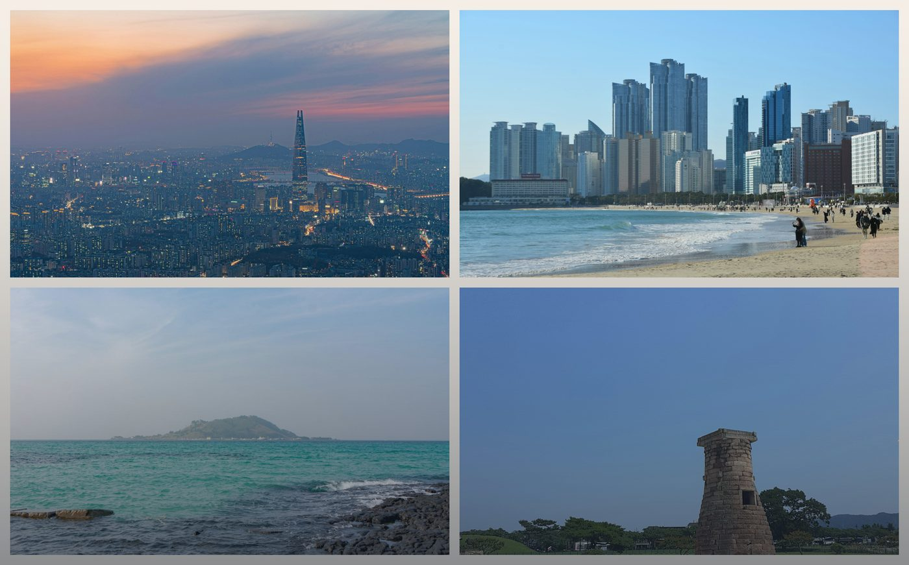
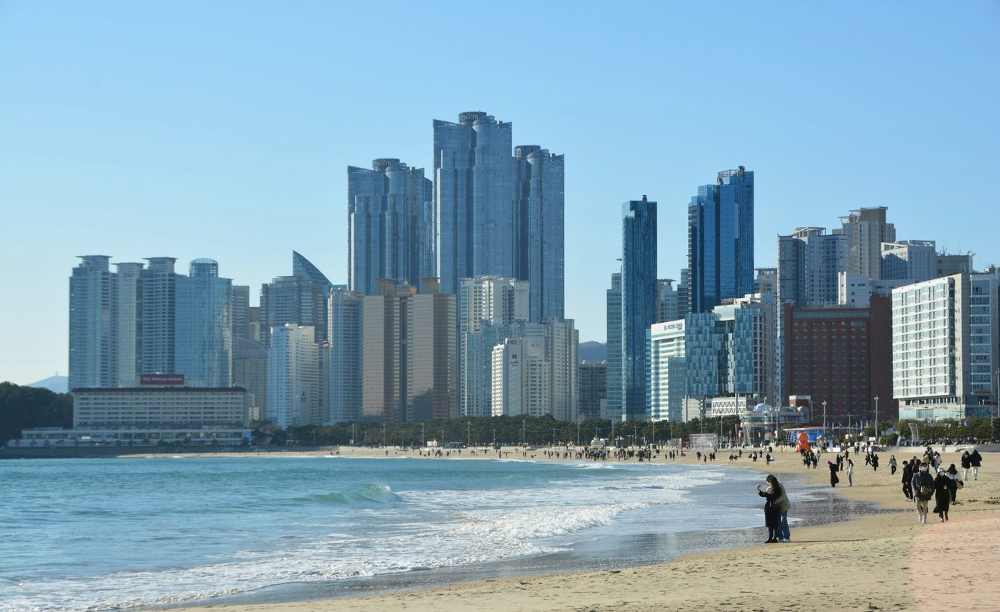
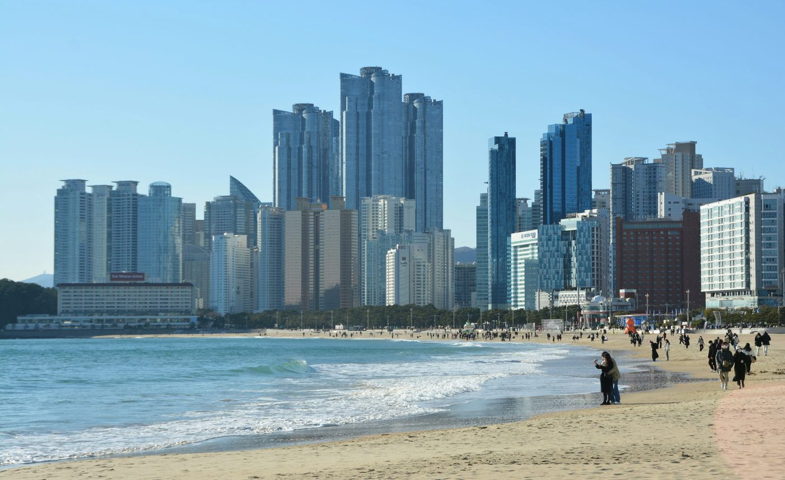

release와 expansion이 한 화면 안에서 보이되, 같은 shelf가 아니라 다른 레이어로 읽히게 정리했습니다.
Release 7Expansion 7East Asia
도시를 먼저 읽고, 바로 여행 흐름으로 이어가세요.

커버를 보고, 어디서 시작할지 고르고, 바로 다음 읽기로 넘어가게 위계를 더 선명하게 맞췄습니다.
release와 expansion이 한 화면 안에서 보이되, 같은 shelf가 아니라 다른 레이어로 읽히게 정리했습니다.
Tokyo·Seoul·Macau처럼 성격이 분명한 도시를 먼저 읽고, 그 다음 sample route로 넘어가게 front door를 나눴습니다.
첫 스크린에서 끝나지 않고, 자연스럽게 city guide와 sample, 그리고 저장 가능한 여정까지 이어지게 리듬을 맞췄습니다.
설명형 기능 사이트보다, 도시를 먼저 읽고 자연스럽게 일정으로 이어지는 흐름을 전면에 둡니다.
플래너를 바로 여는 대신, 이번 주에 잘 맞는 도시 흐름과 샘플 루트를 먼저 보여줍니다.
도시마다 다른 공기감과 이동 밀도를 먼저 읽고, 같은 한국 안에서도 결이 어떻게 갈리는지 보여줍니다.
랜드마크 목록보다, 어떤 동네를 어떤 리듬으로 묶어야 좋은 여행이 되는지부터 먼저 제안합니다.
Tokyo는 layered, Kyoto는 slower, Busan은 scenic이라는 감각부터 먼저 잡습니다.
좋은 일정이 어떤 밀도와 흐름으로 보이는지 예시 일정에서 바로 확인합니다.
마음에 드는 도시와 무드를 누르면 값이 자동으로 채워진 상태로 바로 시작합니다.
vibe, pace, best for, local tips, budget, checklist까지 한 번에 정리됩니다.
읽고 끝나는 대신, 저장한 일정과 공유받은 일정을 다시 꺼내고 확장할 수 있습니다.
먼저 지금 원하는 분위기를 고르고, 그다음 도시와 동행을 맞추는 방식으로 진입을 더 자연스럽게 정리했습니다.
완전히 처음이어도, 하나를 눌러서 바로 값이 채워진 상태로 시작할 수 있게 만들었습니다.
대표 지역은 놓치지 않으면서도, 하루 하나씩 덜 붐비는 포인트를 섞은 균형형 루트.
동네 vibe 차이를 느끼면서도 이동이 과하지 않게, 낮과 밤의 리듬을 나눠서 짠 서울형 루트.
풍경과 휴식을 우선에 두고, 체력 소모를 줄이면서도 제주다운 장면은 놓치지 않는 타입.
매번 처음부터 고르기보다, 계절·상황·동행 기준으로 바로 시작할 수 있는 베이스를 따로 묶었습니다.
도시, 동행, 페이스를 하나씩 고르면 플래너 값이 미리 채워집니다. 처음 쓰는 사람도 고민보다 선택부터 시작하게 만들었어요.
대표 도시 하나만 고르면 추천 길이까지 먼저 잡아줍니다.
여행 스타일을 먼저 고르면 notes도 자연스럽게 보정됩니다.
동행 타입을 고르면 결과 문장도 훨씬 자연스러워집니다.
처음 써보더라도 바로 감이 오도록, 예시 일정 하나를 먼저 보여드릴게요.
대표 지역과 조용한 동네를 균형 있게 엮어, 너무 빡빡하지 않으면서도 도쿄다운 흐름을 느낄 수 있는 일정이에요.
This route keeps the first day soft, builds the strongest city contrast in the middle, and leaves the final stretch light enough to protect your departure day.
Each day keeps the route compact, readable, and easy to follow on mobile.
A city cover, one route mood frame, and one next branch keep the route from reading like a plain checklist.
작지만 실제로 여행 퀄리티를 바꾸는 팁들입니다.
예약, 준비물, 출발 전 확인용으로 바로 쓸 수 있게 정리했어요.
많이 찾는 도시부터 가볍게 읽어보고, 바로 일정으로 이어갈 수 있어요.

읽고 끝나는 가이드가 아니라, 바로 일정으로 연결됩니다.
이동 중에도 쉽게 보고, 저장하고, 다시 열 수 있어요.
일정만이 아니라 여행 준비에 필요한 요소까지 함께 정리합니다.
플래너가 어떤 결과를 만드는지, 실제 예시로 먼저 확인해보세요.
